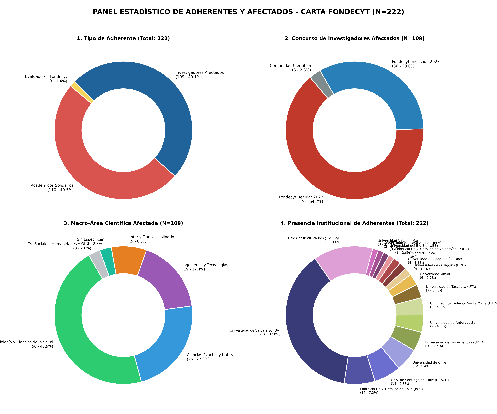
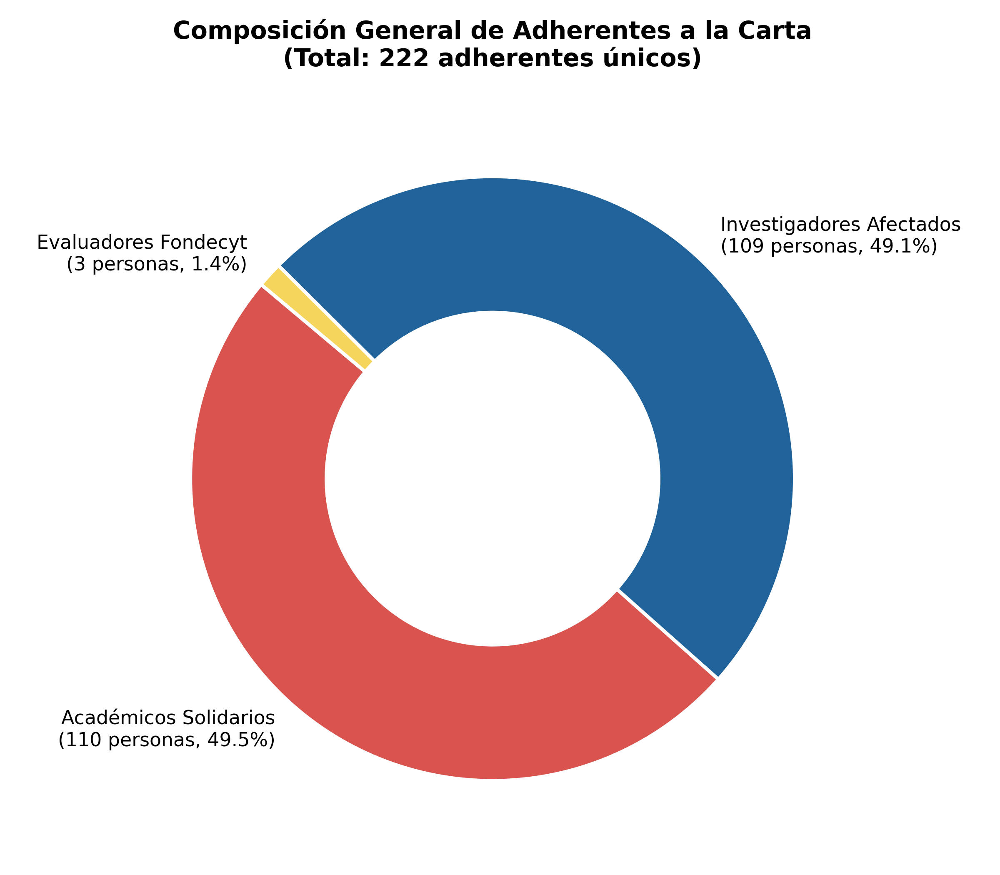
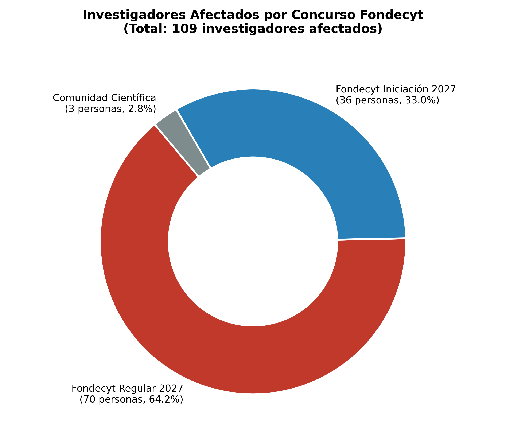
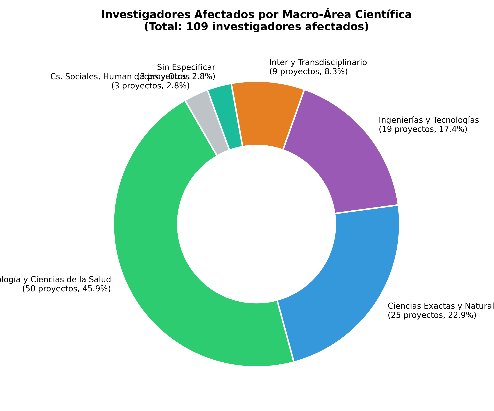
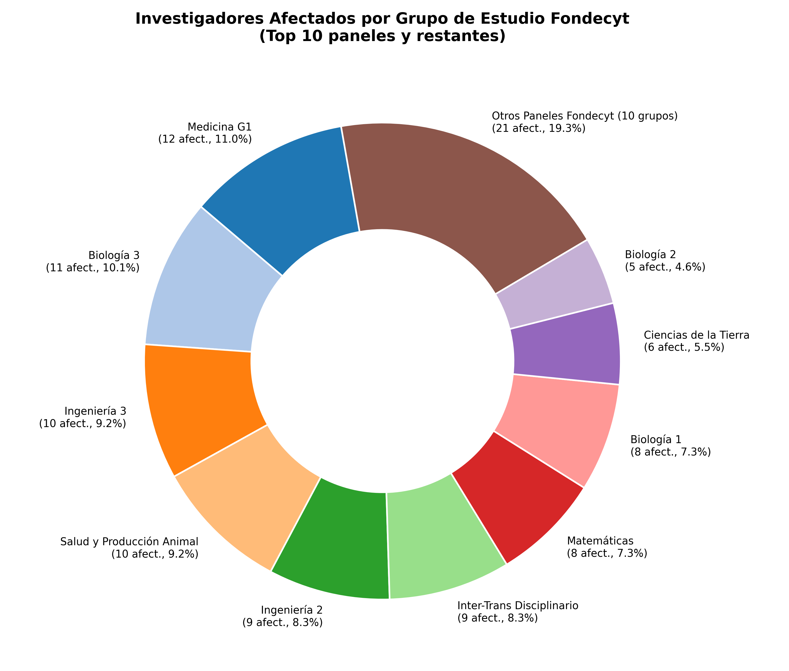
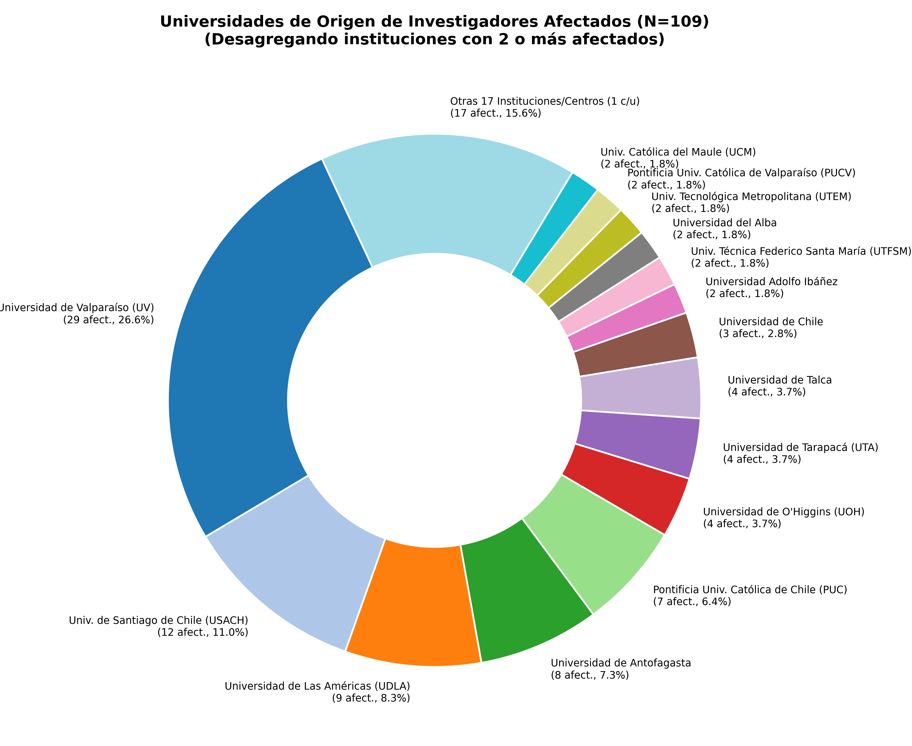
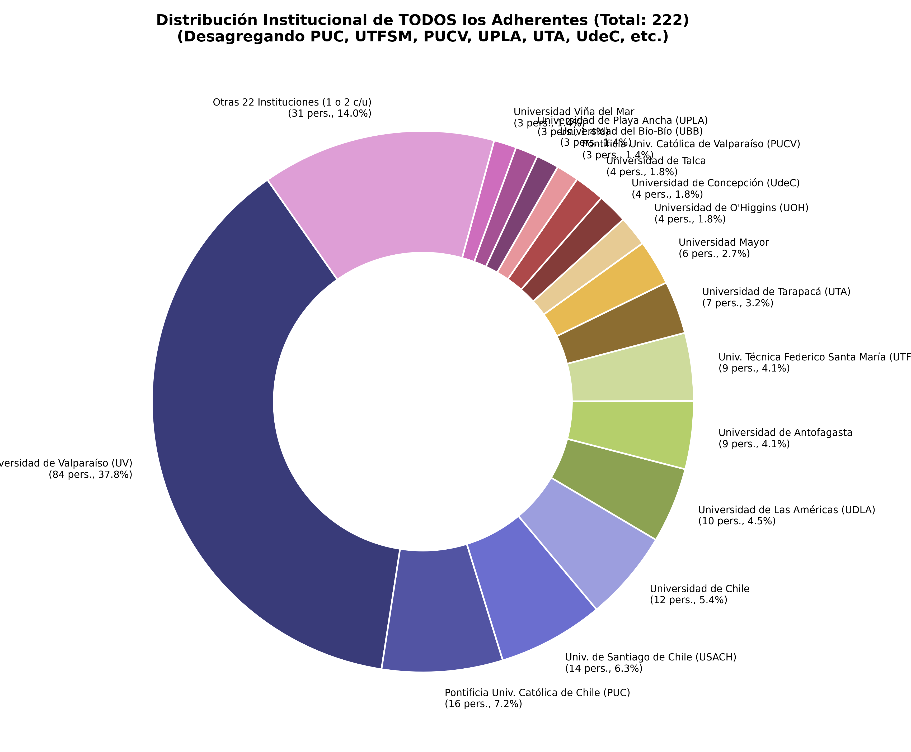

Análisis consolidado de 222 investigadores únicos en más de 38 instituciones y universidades
Los investigadores afectados directos crecieron de 91 a 109 personas. De ellos, 70 pertenecen a Fondecyt Regular 2027 (64.2%) y 36 a Fondecyt Iniciación 2027 (33.0%).
Por primera vez, el respaldo solidario de la comunidad científica supera en número absoluto a los afectados directos: 110 académicos solidarios y 3 evaluadores Fondecyt (50.9% del total), ratificando que toda la comunidad científica considera la medida injusta.
La Pontificia Univ. Católica de Chile (PUC) creció fuertemente a 16 adherentes (7 afectados + 9 solidarios). La USACH aumentó a 14 adherentes (12 afectados directos). La Universidad de Chile suma 12 adherentes (3 afectados + 9 solidarios). La UDLA reúne 10 adherentes (9 afectados).
El área de Biología y Salud lidera con 50 afectados directos (45.9%), seguida por Ciencias Exactas y Naturales (25 afectados, 22.9%) y las Ingenierías (19 afectados, 17.4%).
Cuatro paneles de alta resolución que condensan la fuerza argumentativa del reclamo.

Afectados directos (49.1%) vs Académicos solidarios (49.5%) y Evaluadores Fondecyt (1.4%).

Regular 2027 (64.2%), Iniciación 2027 (33.0%) y otros (2.8%).

Biología y Salud (45.9%), Ciencias Exactas/Naturales (22.9%), Ingenierías (17.4%).

Desglose de los paneles con mayor cantidad de postulaciones excluidas (Medicina G1, Biología 3, Ing. 3, etc.).

Desagregación de todas las casas de estudio con 2 o más afectados (UV, USACH, UDLA, Antofagasta, PUC, UTA, Talca, UOH, PUCV, UTFSM, UTEM, etc.).

Presencia transversal de la comunidad científica total (Total: 222).

| Institución / Universidad | Investigadores Afectados | Académicos Solidarios | Evaluadores Fondecyt | Total Firmantes | % Total |
|---|---|---|---|---|---|
| Universidad de Valparaíso (UV) | 29 | 53 | 2 | 84 | 37.8% |
| Pontificia Univ. Católica de Chile (PUC) | 7 | 9 | 0 | 16 | 7.2% |
| Univ. de Santiago de Chile (USACH) | 12 | 2 | 0 | 14 | 6.3% |
| Universidad de Chile | 3 | 9 | 0 | 12 | 5.4% |
| Universidad de Las Américas (UDLA) | 9 | 1 | 0 | 10 | 4.5% |
| Univ. Técnica Federico Santa María (UTFSM) | 2 | 7 | 0 | 9 | 4.1% |
| Universidad de Antofagasta | 8 | 1 | 0 | 9 | 4.1% |
| Universidad de Tarapacá (UTA) | 4 | 2 | 1 | 7 | 3.2% |
| Universidad Mayor | 0 | 6 | 0 | 6 | 2.7% |
| Universidad de Concepción (UdeC) | 1 | 3 | 0 | 4 | 1.8% |
| Universidad de Talca | 4 | 0 | 0 | 4 | 1.8% |
| Universidad de O'Higgins (UOH) | 4 | 0 | 0 | 4 | 1.8% |
| Pontificia Univ. Católica de Valparaíso (PUCV) | 2 | 1 | 0 | 3 | 1.4% |
| Universidad de Playa Ancha (UPLA) | 0 | 3 | 0 | 3 | 1.4% |
| Univ. Católica del Maule (UCM) | 3 | 0 | 0 | 3 | 1.4% |
| Universidad Central de Chile | 1 | 1 | 0 | 2 | 0.9% |
| Universidad San Sebastián | 1 | 1 | 0 | 2 | 0.9% |
| UMCE | 1 | 1 | 0 | 2 | 0.9% |
| Univ. Tecnológica Metropolitana (UTEM) | 2 | 0 | 0 | 2 | 0.9% |
| Universidad del Alba | 2 | 0 | 0 | 2 | 0.9% |
| Universidad del Bío-Bío (UBB) | 1 | 1 | 0 | 2 | 0.9% |
| Otras 17 Instituciones / Centros (1 c/u) | 11 | 6 | 0 | 17 | 7.7% |
| TOTAL GENERAL | 109 | 110 | 3 | 222 | 100.0% |